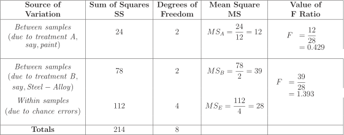

Long description: table8

Alt text: A table summarizing the components of a two-way Analysis of Variance (ANOVA) analysis.
This description was generated by AI and has not been verified by a human. If you spot an error, please use the feedback link below.
- The table details the sources of variation in a two-way ANOVA, including 'Between samples (due to treatment A, say, paint)', 'Between samples (due to treatment B, say, Steel - Alloy)', and 'Within samples (due to chance errors)'.
- For the first source of variation, the Sum of Squares (SS) is 24, the Degrees of Freedom is 2, the Mean Square (MS) is calculated as \(\frac{24}{12}\) (though the table shows \(\frac{24}{12}\) in the MS column for the first treatment effect, the actual calculation appears to use the degree of freedom, \(\frac{24}{2} = 12\)), and the value of the F-Ratio is \(\frac{12}{28} = 0.429\).
- For the second source of variation, the SS is 78, the Degrees of Freedom is 2, the MS is calculated as \(\frac{78}{2} = 39\), and the F-Ratio is \(\frac{39}{28} = 1.393\).
- The 'Within samples' row shows an SS of 112, Degrees of Freedom of 4, an MS of \(\frac{112}{4} = 28\), and no corresponding F-Ratio is provided.
- The final 'Totals' row summarizes the total SS as 214 and the total Degrees of Freedom as 8.